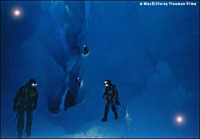

| In English |
| In English |
Glacier Caves
en: glacier cave
de: Gletscherhöhle (e)
es: cueva glaciar
fr: tunnel (m) sous/glacier (m)
hu: gleccserbarlang
it: grotta (sm) glaciale
pt: caverna glaciar
ro: pestera (f) glaciara ghetar (m)
 |
|---|
| Image: a glacier cave in Greenland, featured in the IMAX Film amazing caves, © MacGillivray Freeman Films. |
Caves inside ice are only possible in ice, which does not melt away every year. This kind of ice is called glacier, and is found all over the world. Huge glaciers cover the north and south pole. Other glaciers cover mountains in Greenland, Iceland, Norway, New Zealand and Alaska.
|  |
| Image: a glacier cave in Greenland, featured in the IMAX Film amazing caves, © MacGillivray Freeman Films. |
To remove ice from inside a glacier, all we need is a little bit of energy (aka warmth). The ice melts, and if there are cracks in the ice, the water flows out of the glacier.
Many glaciers of the world are in areas with seasons. In the warm season the surface of the ice starts to melt and the water flows down the ice shield. As it is a little warmer than the ice it also melts a little bit of ice where it flows, and so the water soon forms a gorge. As the ice is able to flow, the gorge closes some time after the water stops to flow. Only water flowing continually will keep the passage clear. But as it flows on the bottom of the gorge, the upper part of the gorge closes and the gorge becomes a cave.
A very special thing are the glacier caves of Iceland. This island has many volcanic regions, so it is rather common that volcanoes or warm springs are located below glaciers. This volcanic warmth melts ice at the bottom of the glacier thus producing a cavern inside. If the water has a way to flow out, it is air filled, if not it is water filled.
 Kverkfjöll, Iceland
Kverkfjöll, Iceland Les grandes cavités de la glace,
longest and deepest glacier caves.
(
Les grandes cavités de la glace,
longest and deepest glacier caves.
({kind=link}